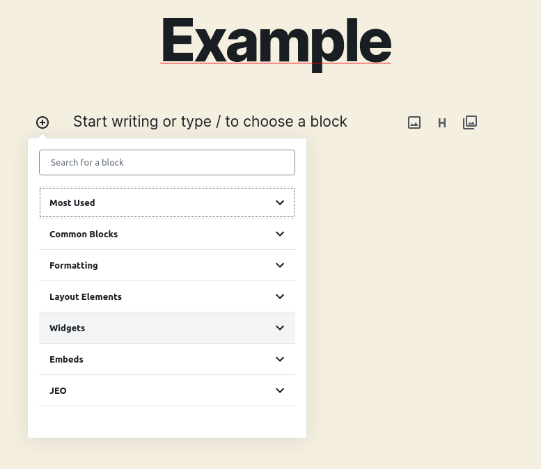
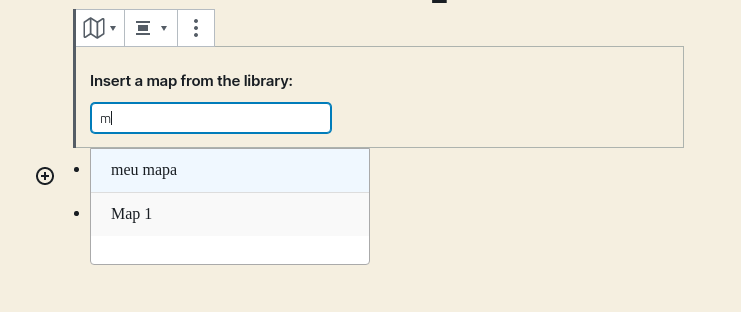
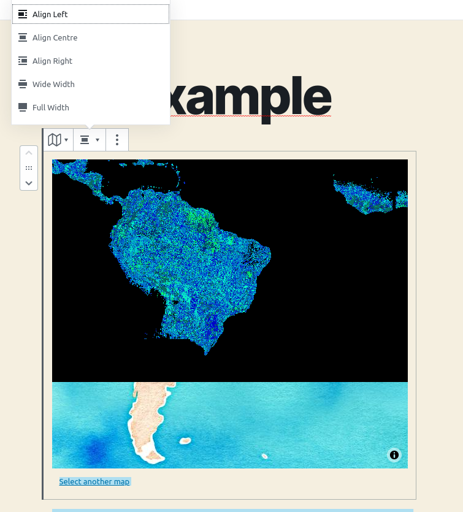
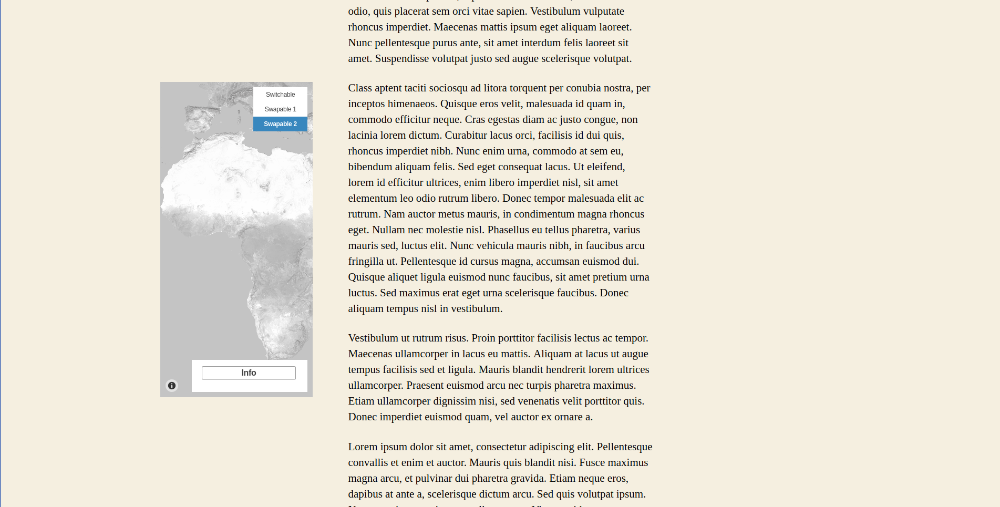
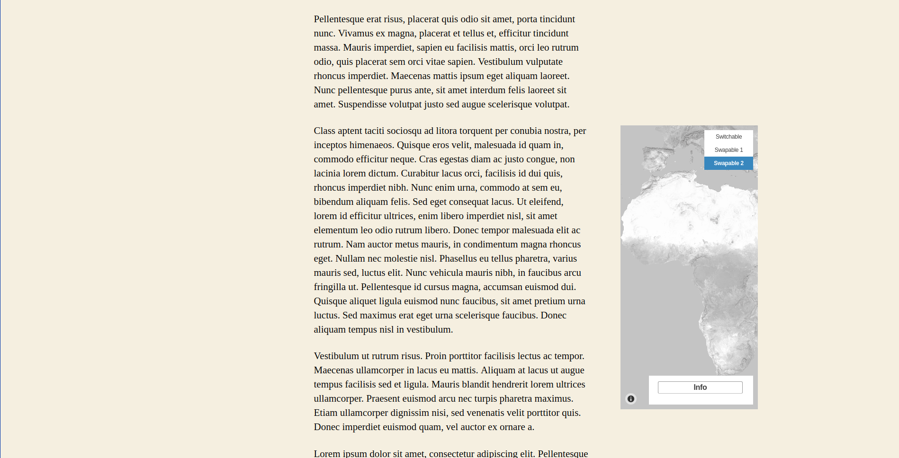
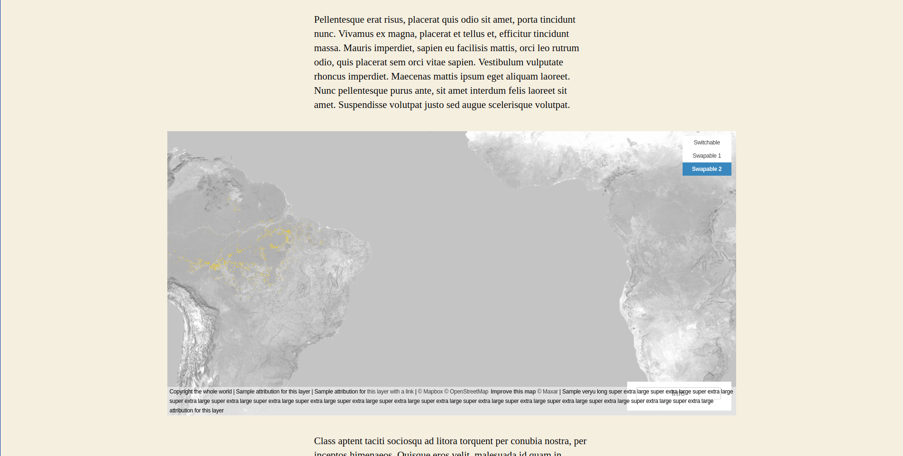
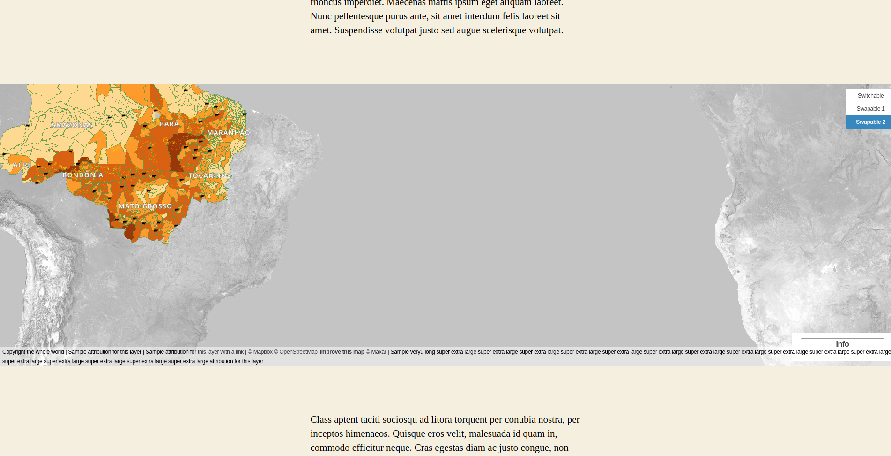
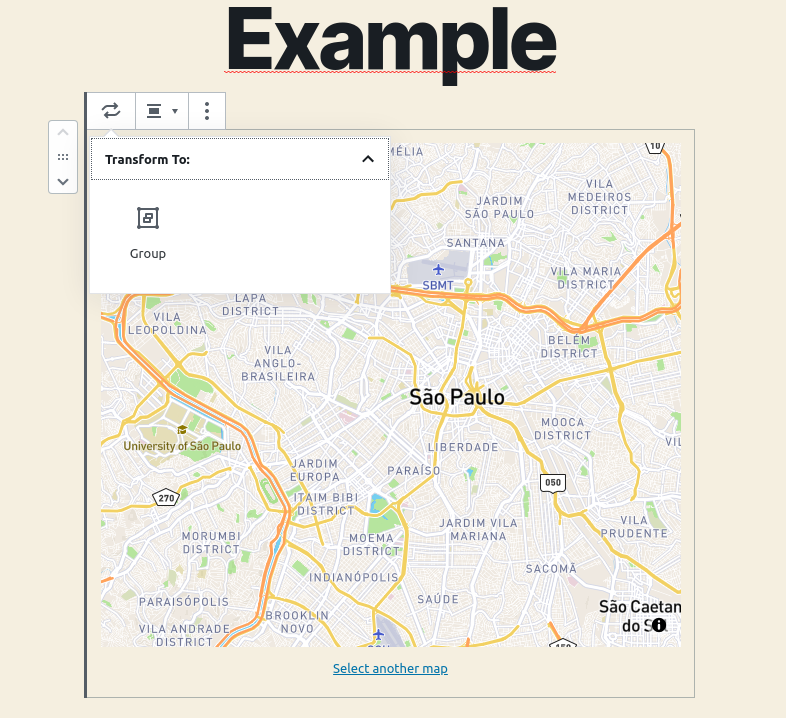
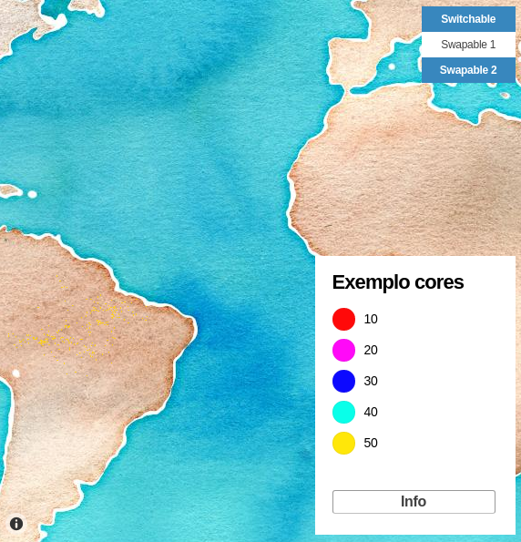
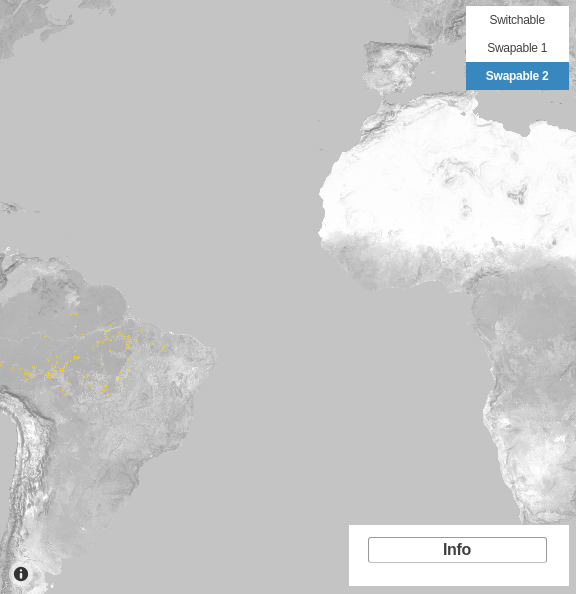

Map block
After creating maps, you can display them inside any post using the JEO Map block.
Adding a map to a post
When creating a new post, you'll find a new block category: JEO.

Select the JEO Map block and search for any map you've created.

Alignment options
With a map selected, you can choose an alignment:
| Alignment | Description |
|---|---|
| Center | Default. Map is centered within the content area |
| Left | Map floats left with text wrapping around it |
| Right | Map floats right with text wrapping around it |
| Wide Width | Map extends beyond the content area |
| Full Width | Map spans the full width of the page |





Grouping maps
Besides the alignment option, there's also a group functionality available to arrange multiple maps together.

Layer swapping
If your map has more than one layer, you can swap them and select which one you want to see, depending on the map layer settings. Check out more about map layers here

